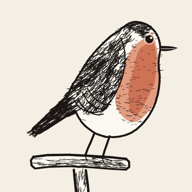

Ptaki Polski
Pomoc i kontakt
Masz pytanie, uwagę do opisu gatunku albo pomysł na ulepszenie? Napisz: ptakipolski.app@gmail.com. Odpowiadam zwykle w ciągu kilku dni.
Najczęstsze pytania
Czy aplikacja potrzebuje internetu? Nie. Opisy, zdjęcia, ciekawostki i dane do zakładki Okolica są w telefonie. Internet jest potrzebny tylko do linków zewnętrznych (np. Wikipedia, xeno-canto) i do mapy przy wyborze miejsca.
Skąd jest lista ptaków w Okolicy? Z obserwacji eBird udostępnionych przez GBIF (licencja CC BY 4.0), zebranych w kwadraty 10 × 10 km. Lista pokazuje ptaki, które realnie można spotkać w danym miesiącu.
Gdzie są moje obserwacje? Tylko w Twoim telefonie. Aplikacja nie ma kont ani własnego serwera.
Jak zmienić język? Ustawienia → Język.
Jak wyłączyć statystyki? Ustawienia → Statystyki użycia. Więcej w polityce prywatności.
Support and contact
A question, a mistake in a species entry, or an idea? Write to ptakipolski.app@gmail.com. I usually reply within a few days.
Common questions
Does the app need internet? No. Entries, photos, facts and the Nearby data are on the phone. Internet is only needed for external links (e.g. Wikipedia, xeno-canto) and for the map when choosing a place.
Where does the Nearby list come from? From eBird observations published through GBIF (CC BY 4.0), aggregated into 10 × 10 km squares. It shows the birds you can realistically meet in a given month.
Where are my sightings stored? Only on your phone. The app has no accounts and no server of its own.
How do I change the language? Settings → Language.
How do I turn off the statistics? Settings → Usage statistics. More in the privacy policy.